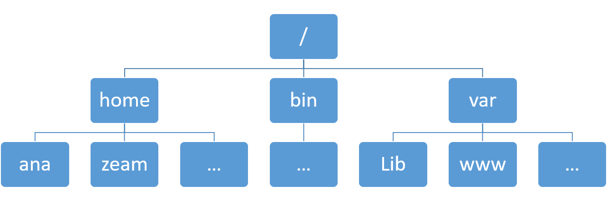

Linux for Bioinformatics
Navigating in Linux file system
You are in your home directory after you log into the system and are directed to the shell command prompt. This section will show you hot to explore Linux file system using shell commands.
Path
To understand Linux file system, you can image it as a tree structure.

In Linux, a path is a unique location of a file or a directory in the file system.
For convenience, Linux file system is usually thought of in a tree structure. On a standard Linux system you will find the layout generally follows the scheme presented below.
The tree of the file system starts at the trunk or slash, indicated by a forward slash (/). This directory, containing all underlying directories and files, is also called the root directory or “the root” of the file system.
%%bash
## In your account, you will see a folder
## with you account ID as the name
cd ~
echo $HOME
/home/xie186
Relative and absolute path
- Absolute path
An absolute path is defined as the location of a file or directory from the root directory(/). An absolute path starts from the root of the tree (/).
Here are some examples:
/home/xie186
/home/xie186/.bashrc
- Relative path
Relative path is a path related to the present working directory:
data/sample1/ and ../doc/.
If you want to get the absolute path based on relative path, you can use readlink with parameter -f:
pwd
readlink -f ../
Once we enter into a Linux file system, we need to 1) know where we are; 2) how to get where we want; 3) how to know what files or directories we have in a particular path.
Check where you are using command pwd
In order to know where we are, we need to use pwd command. The command pwd is short for “print name of current/working directory”. It will return the full path of current directory.
Command pwd is almost always used by itself. This means you only need to type pwd and press ENTER
%%bash
pwd
Listing the contents using command ls
After you know where you are, then you want to know what you have in that
directory, we can use command ls to list directory contents
Its syntax is:
ls [option]... [file]...
ls with no option will list files and directories in bare format. Bare format means the detailed information (type, size, modified date and time, permissions and links etc) won’t be viewed. When you use ls by itself, it will list files and directories in the current directory.
ls ~/
ls -a
ls -ld
Linux command options can be combined without a space between them and with a single - (dash).
The following command is a faster way to use the l and a options and gives the same output as the Linux command shown above.
ls -lt ~/.bashrc
-rw-r--r--. 1 xie186 zt-bioi611 1067 Aug 22 22:27 /home/xie186/.bashrc
Change directory using command cd
Unlike pwd, when you use cd you usually need to provide the path (either absolute or relative path) which we want to enter.
If you didn’t provide any path information, you will change to home directory by default.
| Path | Shortcuts | Description |
|---|---|---|
| Single dot | . | The current folder |
| Double dots | .. | The folder above the current folder |
| Tilde character | ~ | Home directory (normally the directory:/home/my_login_name) |
| Dash | - | Your last working directory |
Here are some examples:
cd ~
pwd
ls
ls ../
##
pwd
cd ../
pwd
cd ./
pwd
Each directory has two entries in it at the start, with names . (a link to itself) and .. (a link to its parent directory). The exception, of course, is the root directory, where the .. directory also refers to the root directory.
Sometimes you go to a new directory and do something, then you remember that you need to go to the previous working direcotry. To get back instantly, use a dash.
%%bash
# This is our current directory
pwd
# Let us go our home diretory
cd ~
# Check where we are
pwd
# Let us go to your previous working directory
cd -
# Check where we are now
pwd
/home/xie186/BIOI611_lab/docs
/home/xie186
/home/xie186/BIOI611_lab/docs
/home/xie186/BIOI611_lab/docs
Manipulations of files and directories
In Linux, manipulations of files and directories are the most frequent work. In this section, you will learn how to copy, rename, remove, and create files and directories.
Command line cp
In Linux, command cp can help you copy files and directories into a target directory.
Command line mv
Move files/folders and rename file/folders using mv:
# move file from one location to another
mv file1 target_direcotry/
# rename
mv file1 file2
mv file1 file2 file3 target_direcotry/
Command mkdir
The syntax is shown as below:
mkdir [OPTION ...] DIRECTORY ...
Multiple directories can be specified when calling mkdir
mkdir directory1 directory2
mkdir -p foo/bar/baz
How to defining complex directory trees with one command:
mkdir -p project/{software,results,doc/{html,info,pdf},scripts}
Then you can view the directory using tree.
Command rm
You can use rm to remove both files and directories.
## You can remove one file.
rm file1
## `rm` can remove multiple files simutaneously
rm file2 file3
You can also use 'rm' to remove a folder. If a folder is empty, you can remove it using rm with -r.
rm -r FOLDER
If a folder is not empty, you can remove it using rm with -r and -f.
mkdir test_folder
rm -r test_folder
View text files in Linux
Commands cat, more and less
The command cat is short for concatenate files and print on the standard output.
The syntax is shown as below:
cat [OPTION]... [FILE]...
For small text file, cat can be used to view the files on the standard output.
The command more is old utility. When the text passed to it is too large to fit on one screen, it pages it. You can scroll down but not up.
The syntaxt of more is shown below:
more [options] file [...]
The command less was written by a man who was fed up with more’s inability to scroll backwards through a file. He turned less into an open source project and over time, various individuals added new features to it. less is massive now. That’s why some small embedded systems have more but not less. For comparison, less’s source is over 27000 lines long. more implementations are generally only a little over 2000 lines long.
The syntaxt of less is shown below:
less [options] file [...]
Command head and tail
The command head is used to output the first part of files. By default, it outputs the first 10 lines of the file.
head [OPTION]... [FILE]...
Here is an exmaple of printing the first 5 files of the file:
head -n 5 code_perl/variable_assign.pl
In fact, the letter n does not even need to be used at all. Just the hyphen and the integer (with no intervening space) are sufficient to tell head how many lines to return. Thus, the following would produce the same result as the above commands:
head -5 target_file.txt
The command tail is used to output the last part of files. By default, it prints the last 10 lines of the file to standard output.
The syntax is shown below:
tail [OPTION]... [FILE]...
Here is an exmaple of printing the last 5 files of the file:
tail -5 target_file.txt
To view lines from a specific point in a file, you can use -n +NUMBER with the tail command. For example, here is an example of viewing the file from the 2nd line of the line.
tail -n +2 target_file.txt
Auto-completion
In most Shell environment, programmable completion feature will also improve your speed of typing. It permits typing a partial name of command or a partial file (or directory), then pressing TAB key to auto-complete the command. If there are more than one possible completions, then TAB will list all of them.
A handy autocomplete feature also exists. Type one or more letters, press the Tab key twice, and then a list of functions starting with these letters appears. For example: type so, press the Tab key twice, and then you get the list as:
soelim sort sotruss soundstretch source
Demonstration of programmable completion feature.
File permissions
In Linux, file permissions are a vital aspect of system security and resource management. This is particularly important in bioinformatics, where large datasets and scripts are often shared across teams. Permissions determine who can read, write, or execute a file, ensuring that critical data is not accidentally modified or deleted.
Three Permission Categories:
- User (u): The owner of the file.
- Group (g): A group of users who share access to the file.
- Other (o): All other users on the system.
Permission Types :
- Read (r): Ability to view the contents of a file.
- Write (w): Ability to modify or delete the file.
- Execute (x): Ability to run the file as a program (for scripts or executables).
%%bash
groups $USER animako eunal gstewar1 mjames17 mjeakle nmilza rahooper
xie186 : zt-bioi611 zt-bioi611_mgr
animako : zt-bioi611
eunal : zt-bioi611
gstewar1 : zt-bioi611
mjames17 : zt-bioi611
mjeakle : zt-bioi611
nmilza : zt-bioi611
rahooper : zt-bioi611
%%bash
mkdir -p ~/test_permission/
touch ~/test_permission/test.txt
ls -l ~/test_permission/
rm -rf ~/test_permission/
total 0
-rw-r--r--. 1 xie186 zt-bioi611 0 Sep 8 22:52 test.txt
Here, the first character represents the type of file (e.g., - for a regular file or d for a directory), followed by three groups of three characters, each representing the permissions for the user, group, and others, respectively.
Examples:
-rwxr-xr--: The owner has read, write, and execute permissions. The group has read and execute permissions, while others can only read the file.
drwxr-x---: A directory where the owner can read, write, and access (execute). The group can only read and access, while others have no permissions.
Modify file permissions using the chmod command. Permissions can be set in two ways:
Symbolic Mode:
In symbolic mode, you modify permissions by referencing the categories (user, group, other) and specifying whether you're adding (+), removing (-), or setting (=) permissions.
# Add execute permission for the user:
chmod u+x filename
# Remove write permission for the group:
chmod g-w filename
# Set read-only permission for others:
chmod o=r filename
Symbolic mode is intuitive and flexible, especially when you want to make precise adjustments to permissions without affecting other categories. This is useful for common file-sharing tasks in bioinformatics where you need to tweak access for specific collaborators.
Numeric Mode (Octal representation):
In numeric mode, file permissions are set using a three-digit number. Each digit represents the permissions foruser,group, andother, respectively. The digits are calculated by adding the values of theread,write, andexecute` permissions:
- Read (r) = 4
- Write (w) = 2
- Execute (x) = 1
Example Permission Breakdown:
Read (r), Write (w), and Execute (x) for user = 7
Read (r) and Execute (x) for group = 5
Read (r) only for others = 4
chmod 754 filename
An example to help you understand executable:
%%bash
printf '#!/user/bin/python\nprint("Hello, Welcome to Course BIOI611!")' > ~/test.py
%%bash
ls -l ~/test.py
python ~/test.py
-rw-r--r--. 1 xie186 zt-bioi611 61 Sep 8 23:06 /home/xie186/test.py
Hello, Welcome to Course BIOI611!
Error message below will be thrown out if you consider ~/test.py as a program:
bash: line 1: /home/xie186/test.py: No such file or directory
%%bash
chmod u+x ~/test.py
ls -l ~/test.py
python ~/test.py
rm ~/test.py
-rwxr--r--. 1 xie186 zt-bioi611 61 Sep 8 23:06 /home/xie186/test.py
Hello, Welcome to Course BIOI611!
Disk Usage of Files and Directories
The Linux du (short for Disk Usage) is a standard Unix/Linux command, used to check the information of disk usage of files and directories on a machine. The du command has many parameter options that can be used to get the results in many formats. The du command also displays the files and directory sizes in a recursively manner.
%%bash
du -h ~/scratch.bioi611/Analysis/bulk_RNAseq/STAR_ref
2.5G /home/xie186/scratch.bioi611/Analysis/bulk_RNAseq/STAR_ref
%%bash
du -ah ~/scratch.bioi611/Analysis/bulk_RNAseq/STAR_ref
2.9M /home/xie186/scratch.bioi611/Analysis/bulk_RNAseq/STAR_ref/sjdbList.fromGTF.out.tab
7.5K /home/xie186/scratch.bioi611/Analysis/bulk_RNAseq/STAR_ref/Log.out
936M /home/xie186/scratch.bioi611/Analysis/bulk_RNAseq/STAR_ref/SA
1.5G /home/xie186/scratch.bioi611/Analysis/bulk_RNAseq/STAR_ref/SAindex
3.0M /home/xie186/scratch.bioi611/Analysis/bulk_RNAseq/STAR_ref/transcriptInfo.tab
2.3M /home/xie186/scratch.bioi611/Analysis/bulk_RNAseq/STAR_ref/sjdbList.out.tab
1.5M /home/xie186/scratch.bioi611/Analysis/bulk_RNAseq/STAR_ref/geneInfo.tab
1.0K /home/xie186/scratch.bioi611/Analysis/bulk_RNAseq/STAR_ref/genomeParameters.txt
512 /home/xie186/scratch.bioi611/Analysis/bulk_RNAseq/STAR_ref/chrLength.txt
512 /home/xie186/scratch.bioi611/Analysis/bulk_RNAseq/STAR_ref/chrNameLength.txt
512 /home/xie186/scratch.bioi611/Analysis/bulk_RNAseq/STAR_ref/chrStart.txt
7.6M /home/xie186/scratch.bioi611/Analysis/bulk_RNAseq/STAR_ref/exonGeTrInfo.tab
3.1M /home/xie186/scratch.bioi611/Analysis/bulk_RNAseq/STAR_ref/exonInfo.tab
2.8M /home/xie186/scratch.bioi611/Analysis/bulk_RNAseq/STAR_ref/sjdbInfo.txt
512 /home/xie186/scratch.bioi611/Analysis/bulk_RNAseq/STAR_ref/chrName.txt
119M /home/xie186/scratch.bioi611/Analysis/bulk_RNAseq/STAR_ref/Genome
2.5G /home/xie186/scratch.bioi611/Analysis/bulk_RNAseq/STAR_ref
%%bash
du -csh /home/xie186/scratch.bioi611/Analysis/bulk_RNAseq/*
19G /home/xie186/scratch.bioi611/Analysis/bulk_RNAseq/raw_data
0 /home/xie186/scratch.bioi611/Analysis/bulk_RNAseq/raw_data_smart_seq
1.5K /home/xie186/scratch.bioi611/Analysis/bulk_RNAseq/s1_download_data.sub
575K /home/xie186/scratch.bioi611/Analysis/bulk_RNAseq/s1_download_smart_seq-7478223-xie186.err
0 /home/xie186/scratch.bioi611/Analysis/bulk_RNAseq/s1_download_smart_seq-7478223-xie186.out
8.5K /home/xie186/scratch.bioi611/Analysis/bulk_RNAseq/s1_download_smart_seq.sub
2.5K /home/xie186/scratch.bioi611/Analysis/bulk_RNAseq/s2_star.sub
34G /home/xie186/scratch.bioi611/Analysis/bulk_RNAseq/STAR_align
2.5G /home/xie186/scratch.bioi611/Analysis/bulk_RNAseq/STAR_ref
512 /home/xie186/scratch.bioi611/Analysis/bulk_RNAseq/test.sub
512 /home/xie186/scratch.bioi611/Analysis/bulk_RNAseq/test.txt
55G total
Symbolic link
Symbolic link, similar to shortcuts, can point to another file/folder.
ln -s <path_to_files/folder_to_be_linked> <symlink_to_be_created>
ls -l <symlink>
unlink <symlink>
File Management and Data Handling
Compressing and decompressing files (gzip, gunzip, tar).
Compress one file:
%%bash
perl -e 'for($i=0; $i<10000; ++$i){ print "test\n";}' > test.txt
du -h test.txt
gzip test.txt
du -h test.txt.gz
gunzip test.txt
ls test.txt
rm test.txt
52K test.txt
4.0K test.txt.gz
test.txt
Compress multiple files:
%%bash
perl -e 'for($i=0; $i<10000; ++$i){ print "test\n";}' > test1.txt
perl -e 'for($i=0; $i<10000; ++$i){ print "test\n";}' > test2.txt
du -h test1.txt test2.txt
tar zcvf test.tar.gz test1.txt test2.txt
du -sh test.tar.gz
ls test1.txt test2.txt
52K test1.txt
52K test2.txt
test1.txt
test2.txt
4.0K test.tar.gz
test1.txt
test2.txt
z: This option tells tar to compress the archive using gzip. The resulting archive will have a .gz extension to indicate that it has been compressed with the gzip utility.
c: This option stands for create. It instructs tar to create a new archive.
v: This stands for verbose. When used, tar will display detailed information about the files being added to the archive, such as their names.
f: This stands for file. It tells tar that the next argument (test.tar.gz) is the name of the archive file to create.
%%bash
tar tvf test.tar.gz
rm test.tar.gz test1.txt test2.txt
-rw-r--r-- xie186/zt-bioi611 50000 2024-08-25 21:52 test1.txt
-rw-r--r-- xie186/zt-bioi611 50000 2024-08-25 21:52 test2.txt
t: List the contents of archive.tar.
v: Display additional details about each file (like file permissions, size, and modification date).
f: Specifies that archive.tar is the archive file to operate on.
To uncompress a tar.gz file, use tar zxvf:
tar zxvf test.tar.gz
Transferring files within the network
Basic Syntax of scp:
scp [options] source destination
Copy a Local File to a Remote Server
scp file.txt username@remote_host:/path/to/destination/
Alternative command is rsync.
File searching, filtering, and text processing
Command find
The find command is designed for comprehensive file and directory sesarches.
find [path] [options] [expression]
%%bash
find /home/xie186/scratch/bioi611/bulk_RNAseq -name "*.fastq.gz"
/home/xie186/scratch/bioi611/bulk_RNAseq/raw_data/N2_day7_rep3.fastq.gz
/home/xie186/scratch/bioi611/bulk_RNAseq/raw_data/N2_day1_rep3.fastq.gz
/home/xie186/scratch/bioi611/bulk_RNAseq/raw_data/N2_day1_rep1.fastq.gz
/home/xie186/scratch/bioi611/bulk_RNAseq/raw_data/N2_day7_rep1.fastq.gz
/home/xie186/scratch/bioi611/bulk_RNAseq/raw_data/N2_day1_rep2.fastq.gz
/home/xie186/scratch/bioi611/bulk_RNAseq/raw_data/N2_day7_rep2.fastq.gz
Text data counts wc
%%bash
find /home/xie186/scratch/bioi611/bulk_RNAseq -name "*.fastq.gz" |wc -l
6
Pipe |
In Linux and Unix-based systems, the pipe (|) is used in the command line to redirect the output of one command as the input to another command. This allows you to chain commands together and perform more complex tasks in a single line.
%%bash
grep '>' ~/scratch/bioi611/reference/Caenorhabditis_elegans.WBcel235.dna.toplevel.fa |wc -l
7
Column filering
Command cut can be used to print selected parts of lines from each FILE to standard output.
%%bash
wget -O GSE164073_raw_counts_GRCh38.p13_NCBI.tsv.gz "https://ncbi.nlm.nih.gov/geo/download/?type=rnaseq_counts&acc=GSE102537&format=file&file=GSE102537_raw_counts_GRCh38.p13_NCBI.tsv.gz"
--2024-08-25 21:08:03-- https://ncbi.nlm.nih.gov/geo/download/?type=rnaseq_counts&acc=GSE102537&format=file&file=GSE102537_raw_counts_GRCh38.p13_NCBI.tsv.gz
Resolving ncbi.nlm.nih.gov (ncbi.nlm.nih.gov)... 2607:f220:41e:4290::110, 130.14.29.110
Connecting to ncbi.nlm.nih.gov (ncbi.nlm.nih.gov)|2607:f220:41e:4290::110|:443... connected.
HTTP request sent, awaiting response... 200 OK
Length: 349584 (341K) [application/octet-stream]
Saving to: ‘GSE164073_raw_counts_GRCh38.p13_NCBI.tsv.gz’
0K .......... .......... .......... .......... .......... 14% 6.66M 0s
50K .......... .......... .......... .......... .......... 29% 16.9M 0s
100K .......... .......... .......... .......... .......... 43% 27.5M 0s
150K .......... .......... .......... .......... .......... 58% 10.1M 0s
200K .......... .......... .......... .......... .......... 73% 17.2M 0s
250K .......... .......... .......... .......... .......... 87% 37.6M 0s
300K .......... .......... .......... .......... . 100% 10.5M=0.02s
2024-08-25 21:08:04 (13.4 MB/s) - ‘GSE164073_raw_counts_GRCh38.p13_NCBI.tsv.gz’ saved [349584/349584]
%%bash
zcat GSE164073_raw_counts_GRCh38.p13_NCBI.tsv.gz |head
GeneID GSM2740270 GSM2740272 GSM2740273 GSM2740274 GSM2740275
100287102 9 17 14 14 19
653635 336 470 467 310 370
102466751 8 56 46 31 31
107985730 0 2 2 3 3
100302278 0 1 0 0 2
645520 0 3 8 4 7
79501 0 2 2 1 4
100996442 16 25 34 20 28
729737 19 39 33 22 26
%%bash
zcat GSE164073_raw_counts_GRCh38.p13_NCBI.tsv.gz |cut -f1,2,3 |head
GeneID GSM2740270 GSM2740272
100287102 9 17
653635 336 470
102466751 8 56
107985730 0 2
100302278 0 1
645520 0 3
79501 0 2
100996442 16 25
729737 19 39
Row filtering
%%bash
grep '>' ~/scratch/bioi611/reference/Caenorhabditis_elegans.WBcel235.dna.toplevel.fa
>I dna:chromosome chromosome:WBcel235:I:1:15072434:1 REF
>II dna:chromosome chromosome:WBcel235:II:1:15279421:1 REF
>III dna:chromosome chromosome:WBcel235:III:1:13783801:1 REF
>IV dna:chromosome chromosome:WBcel235:IV:1:17493829:1 REF
>V dna:chromosome chromosome:WBcel235:V:1:20924180:1 REF
>X dna:chromosome chromosome:WBcel235:X:1:17718942:1 REF
>MtDNA dna:chromosome chromosome:WBcel235:MtDNA:1:13794:1 REF
%%bash
zcat GSE164073_raw_counts_GRCh38.p13_NCBI.tsv.gz |wc -l
zcat GSE164073_raw_counts_GRCh38.p13_NCBI.tsv.gz |awk '$2>500' |wc -l
zcat GSE164073_raw_counts_GRCh38.p13_NCBI.tsv.gz |awk '$2>500 && $3>500' |wc -l
39377
8773
3820
Text processing
%%bash
grep '>' ~/scratch/bioi611/reference/Caenorhabditis_elegans.WBcel235.dna.toplevel.fa |sed 's/>//' |sed 's/ .*//'
I
II
III
IV
V
X
MtDNA
Regular Expressions
Regular expressions are sequences of characters that define search patterns. They are commonly used for string matching, searching, and text processing.
Regex is used in text editors, programming languages, command-line tools (likegrep and sed), and many bioinformatics tools to search, replace, or extract data from text.
- Metacharacters: Special characters that have specific meanings in regex syntax.
.(dot): Matches any single character except a newline. Example:A.Gmatches "AAG", "ATG", "ACG", etc.
^: Matches the start of a line.
Example: ^A matches any line starting with "A".
$: Matches the end of a line.
Example: end$ matches any line ending with "end".
*: Matches 0 or more occurrences of the preceding character.
Example: ca*t matches "ct", "cat", "caat", "caaat", etc.
+: Matches 1 or more occurrences of the preceding character.
Example: ca+t matches "cat", "caat", "caaat", etc.
?: Matches 0 or 1 occurrence of the preceding character.
Example: colou?r matches both "color" and "colour".
[]: Matches any one of the characters inside the brackets.
Example: [aeiou] matches any vowel.
|: Alternation (OR) operator.
Example: cat|dog matches either "cat" or "dog".
- Character Classes: Represents a set of characters.
\d: Matches any digit (equivalent to [0-9]).
\w: Matches any word character (alphanumeric or underscore).
\s: Matches any whitespace character (spaces, tabs, etc.).
\D: Matches any non-digit character.
\W: Matches any non-word character.
\S: Matches any non-whitespace character.
- Quantifiers: Specify the number of occurrences to match
{n}: Matches exactly n occurrences.
Example: A{3} matches "AAA".
{n,}: Matches n or more occurrences.
Example: T{2,} matches "TT", "TTT", "TTTT", etc.
{n,m}: Matches between n and m occurrences.
Example: G{1,3} matches "G", "GG", or "GGG".
An example of the command line used
%%bash
grep -v '#' ~/scratch/bioi611/reference/Caenorhabditis_elegans.WBcel235.111.gtf \
|awk '$3=="gene"' \
|sed 's/.*gene_biotype "//' \
|sed 's/";//'|sort |uniq -c \
| sort -k1,1n
22 rRNA
100 antisense_RNA
129 snRNA
194 lincRNA
261 miRNA
346 snoRNA
634 tRNA
2128 pseudogene
7764 ncRNA
15363 piRNA
19985 protein_coding
Environment variables
Environment variables are dynamic values that affect the behavior of processes and programs in Linux. They are commonly used to store configuration data and are essential in bioinformatics workflows for defining paths to software, libraries, and datasets.
Commonly Used Environment Variables:
PATH:
The PATH variable specifies directories where the system looks for executable files when a command is run.
%%bash
echo $PATH
/cvmfs/hpcsw.umd.edu/spack-software/2023.11.20/views/2023/linux-rhel8-zen2/gcc@11.3.0/python-3.10.10/compiler/linux-rhel8-zen2/gcc/11.3.0/texlive/bin/x86_64-linux:/cvmfs/hpcsw.umd.edu/spack-software/2023.11.20/views/2023/linux-rhel8-zen2/gcc@11.3.0/python-3.10.10/compiler/linux-rhel8-zen2/gcc/11.3.0/imagemagick/bin:/cvmfs/hpcsw.umd.edu/spack-software/2023.11.20/views/2023/linux-rhel8-zen2/gcc@11.3.0/python-3.10.10/compiler/linux-rhel8-zen2/gcc/11.3.0/graphviz/bin:/cvmfs/hpcsw.umd.edu/spack-software/2023.11.20/views/2023/linux-rhel8-zen2/gcc@11.3.0/python-3.10.10/compiler/linux-rhel8-zen2/gcc/11.3.0/ghostscript/bin:/cvmfs/hpcsw.umd.edu/spack-software/2023.11.20/views/2023/linux-rhel8-zen2/gcc@11.3.0/python-3.10.10/compiler/linux-rhel8-zen2/gcc/11.3.0/ffmpeg/bin:/cvmfs/hpcsw.umd.edu/spack-software/2023.11.20/views/2023/linux-rhel8-zen2/gcc@11.3.0/python-3.10.10/mpi-nocuda/linux-rhel8-zen2/gcc/11.3.0/bin:/cvmfs/hpcsw.umd.edu/spack-software/2023.11.20/views/2023/linux-rhel8-zen2/gcc@11.3.0/python-3.10.10/nompi-nocuda/linux-rhel8-zen2/gcc/11.3.0/bin:/cvmfs/hpcsw.umd.edu/spack-software/2023.11.20/views/2023/linux-rhel8-zen2/gcc@11.3.0/python-3.10.10/compiler/linux-rhel8-zen2/gcc/11.3.0/bin:/cvmfs/hpcsw.umd.edu/spack-software/2023.11.20/linux-rhel8-x86_64/gcc-rh8-8.5.0/gcc-11.3.0-oedkmii7vhd6rbnqm6xufmg7d3jx4w6l/bin:/cvmfs/hpcsw.umd.edu/spack-software/2023.11.20/linux-rhel8-zen2/gcc-11.3.0/py-jupyter-1.0.0-trwwgzwljql55mhmaygcuxb3nvaevjsu/bin:/software/acigs-utilities/bin:/home/xie186/miniforge3/bin:/home/xie186/miniforge3/condabin:/home/xie186/SHELL.bioi611/software/STAR_2.7.11b/Linux_x86_64_static:/home/xie186/.local/bin:/home/xie186/bin:/software/acigs-utilities/bin:/usr/share/Modules/bin:/usr/lib/heimdal/bin:/usr/local/bin:/usr/bin:/usr/local/sbin:/usr/sbin:/opt/symas/bin:/opt/dell/srvadmin/bin
HOME:
The HOME variable stores the path to the user’s home directory.
%%bash
echo $HOME
/home/xie186
%%bash
echo $SHELL
/bin/bash
Setting Environment Variables:
Temporarily setting a variable (valid only for the current shell session):
export PATH=value:PATH
Permanently setting a variable:
To make the environment variable persistent across sessions,
it needs to be added to configuration files like .bashrc or .bash_profile.
Example: Add the following line to .bashrc:
Software installation
Installation via Conda
Conda is a popular package management system, especially in bioinformatics, due to its ability to create isolated environments. This is crucial when working with tools that have conflicting dependencies.
- Install
conda/miniforge
Go to: https://github.com/conda-forge/miniforge/releases Download the corresponding installtion file
%%bash
uname -m
x86_64
wget https://github.com/conda-forge/miniforge/releases/download/24.7.1-0/Mambaforge-24.7.1-0-Linux-x86_64.sh
- Create conda environment and install software
conda create -n bioi611
conda activate bioi611
conda install bioconda::fastqc==0.11.8
Installation via Source Code (Manual Compilation)
git clone https://github.com/lh3/bwa.git
cd bwa; make
./bwa index ref.fa
Using Container for Bioinformatics Tools
Understanding Containers and Using Singularity
- What Are Containers?
Containers are lightweight, portable environments that bundle software and all its dependencies so that it runs consistently on any system.
Think of a container as a "self-contained laboratory" — it has all the reagents (software, libraries, dependencies) you need, already prepared.
In Bioinformatics, where different tools depend on specific versions of Python, R, or system libraries, containers ensure:
-
Reproducibility: The same tool produces the same results on any computer or HPC.
-
Portability: You can run the same environment locally, in the cloud, or on a supercomputer.
-
Isolation: Tools run in separate environments, avoiding conflicts between software packages.
-
Docker vs. Singularity
| Feature | Docker | Singularity |
|---|---|---|
| Designed for | Cloud, local systems | HPC, clusters |
| Requires root privileges | Yes | No (runs safely in user space) |
| Image format | .tar / .img (Docker images) |
.sif (Singularity Image File) |
| Integration with HPC | Limited | Excellent |
| Common in | DevOps, cloud platforms | Research, bioinformatics, academia |
Most High-Performance Computing (HPC) systems do not allow Docker because it requires root privileges. Instead, they use Singularity, which can pull Docker images and convert them into a format that’s safe for HPC environments.
- Why Use Containers in Bioinformatics?
Bioinformatics tools often require:
-
Complex dependencies (e.g., different versions of glibc, python, boost, etc.)
-
Conflicting library versions
-
Long installation times
Using containers solves these issues. For example:
-
You can use Biocontainers — prebuilt containers with thousands of bioinformatics tools.
-
Each container is tested and version-controlled.
-
No need to install software manually.
-
Example: Using Singularity to Run TrimGalore
TrimGalore is a widely used tool for quality-control sequencing data. It combines Cutadapt and FastQC to trim adapters and assess read quality.
Instead of manually installing it, we can use a pre-built Biocontainer.
Step 1. Load Singularity on the HPC
On most HPC systems, Singularity is provided as a module:
module load singularity
Step 2. Build a Singularity Image from a Docker Container
The BioContainers project provides many pre-built Docker images for bioinformatics tools. Singularity can directly convert these Docker images into a Singularity Image File (.sif) suitable for HPC use:
singularity build trimgalore_v0.6.10.sif docker://quay.io/biocontainers/trim-galore:0.6.10--hdfd78af_0
This command downloads the Docker image from Quay.io and converts it into a local .sif file.
Step 3. Run TrimGalore from the Container
You can run commands inside the container using singularity exec. For example, to check that TrimGalore is available:
singularity exec trimgalore_v0.6.10.sif trim_galore --help
If you want to run the tool on data located in your project directory, bind-mount the directory so that it’s accessible inside the container:
singularity exec -B /scratch/zt1/project/bioi611/ trimgalore_v0.6.10.sif trim_galore --help
The -B option (short for bind) makes the specified directory available inside the container.
Step 4. (Optional) Enter the Container for an Interactive Session
singularity exec -B /scratch/zt1/project/bioi611/ trimgalore_v0.6.10.sif /bin/bash
From there, you can directly run commands as if TrimGalore were installed on your system.
| Step | Action | Command Example |
|---|---|---|
| 1 | Load Singularity | module load singularity |
| 2 | Build the image | singularity build trimgalore_v0.6.10.sif docker://quay.io/biocontainers/trim-galore:0.6.10--hdfd78af_0 |
| 3 | Run the tool | singularity exec trimgalore_v0.6.10.sif trim_galore --help |
| 4 | Interactive mode | singularity exec -B /scratch/... trimgalore_v0.6.10.sif /bin/bash |
Text editor in Linux
In Linux, we sometimes need to create or edit a text file like writing a new perl script. So we need to use text editor.
As a newbie, someone would prefer a basic, GUI-based text editor with menus and traditional CUA key bindings. Here we recommend Sublime, ATOM and Notepad++.
But GUI-based text editor is not always available in Linux.
A powerful screen text editor vi (pronounced “vee-eye”) is available on nearly all Linux system. We highly recommend vi as a text editor, because something we’ll have to edit a text file on a system without a friendlier text editor. Once we get familiar with vi, we’ll find that it’s very fast and powerful.
But remember, it’s OK if you think this part is too difficult at the beginning. You can use either Sublime, ATOM or Notepad++. If you are connecting to a Linux system without Sublime, ATOM and Notepad++, you can write the file in a local computer and then upload the file onto Linux system.
Basic vi skills
As vi uses a lot of combination of keystrokes, it may be not easy for newbies to remember all the combinations in one fell swoop. Considering this, we’ll first introduce the basic skills someone needs to know to use vi. We need to first understand how three modes of vi work and then try to remember a few basic vi commonds. Then we can use these skills to write Perl or R scripts in the following chaptors for Perl and R (Figure \@ref(fig:workingModeVi)).
Three modes of vi:
Create new text file with vi
mkdir test_vi ## generate a new folder
cd test_vi ## go into the new folder
echo "Using \`ls\` we don't expect files in this folder."
ls
echo "No file displayed!"
Using the code above, we made a new directory named test_vi. We didn't see any file.
If we type vi test.py, an empty file and screen are created into which you may enter text because the file does not exist((Figure \@ref(fig:ViNewFile))).
vi test.py
A screentshot of the vi test.py.
Now if you are in vi mode. To go to Input mode, you can type i, 'a' or 'o' (Figure \@ref(fig:ViInpuMode)).
Now you can type the content (codes or other information) (\@ref(fig:ViInpuType)).
Once you are done typing. You need to go to Command mode(Figure \@ref(fig:workingModeVi)) if you want to save and exit the file. To do this, you need to press ESC button on the keyboard.
Now we just wrote a Perl script. We can run this script.
python test.py
High-Performance Computing (HPC) for Bioinformatics
HPC resources enable bioinformatics analyses that require significant computational power and memory.
Basics of HPC clusters and job schedulers (SLURM).
An example of an job file (s1_star.sh):
#!/bin/bash
#SBATCH --partition=standard
#SBATCH -t 40:00:00
#SBATCH -n 1
#SBATCH -c 20
#SBATCH --job-name=s1_star_aln
#SBATCH --mail-type=FAIL,BEGIN,END
#SBATCH --error=%x-%J-%u.err
#SBATCH --output=%x-%J-%u.out
conda activate bioi611
mkdir -p STAR_align/
STAR --genomeDir STAR_ref \
--outSAMtype BAM SortedByCoordinate \
--twopassMode Basic \
--quantMode TranscriptomeSAM GeneCounts \
--readFilesCommand zcat \
--outFileNamePrefix STAR_align/N2_day1_rep1. \
--runThreadN 20 \
--readFilesIn raw_data/N2_day1_rep1.fastq.gz
To submit this job, run:
sbatch s1_star.sh
Check quota infomation
%%bash
scratch_quota
# shell_quota
# Group quotas
Group name Space used Space quota % quota used
zt-bioi611 285.811 MB 4.000 TB 0.01%
zt-bioi611_mgr 98.163 GB unlimited 0
total 98.449 GB unlimited 0
# User quotas
User name Space used Space quota % quota used % of GrpTotal
xie186 98.449 GB unlimited 0 100.00%
View information about Slurm nodes and partitions.
%%bash
sinfo
PARTITION AVAIL TIMELIMIT NODES STATE NODELIST
debug up 15:00 1 maint compute-b8-60
debug up 15:00 1 drng compute-b8-57
debug up 15:00 1 mix compute-b8-59
debug up 15:00 1 alloc compute-b8-58
scavenger up 14-00:00:0 1 inval compute-b8-48
scavenger up 14-00:00:0 4 drain$ compute-b8-[53-56]
scavenger up 14-00:00:0 84 maint compute-a7-[5,9,14-16,28,49],compute-a8-[2-4,8-9,15,18,22,24,29,37,44,51],compute-b5-[4,16,26,29-30,33,44,51-52],compute-b6-[7,12,21,28-29,32,34,43-46,50-51,59],compute-b7-[12-13,19-22,25,27,29,31,35,37,39,42,45-46,49-50,54,56-59],compute-b8-[16,19,21,23-24,29,32,35-37,39-45,60]
scavenger up 14-00:00:0 2 drain* compute-a7-[13,43]
scavenger up 14-00:00:0 13 drng compute-a8-[7,14],compute-b7-[14-15,18,38,43-44],compute-b8-[2,20,51,57],gpu-b9-5
scavenger up 14-00:00:0 2 drain compute-a7-8,gpu-b10-5
scavenger up 14-00:00:0 182 mix bigmem-a9-[1-2,4-5],compute-a5-[3-11],compute-a7-[2-3,6-7,10,12,17-19,21-22,30,38-40,45-46,48,54-56,60],compute-a8-[5-6,10-12,16-17,19-21,25,28,31-35,39,41,45,47,50,52,54,57-59],compute-b5-[1-3,5-8,11,13-15,17-25,27-28,31-32,34-43,45-50,53-55,57-58],compute-b6-[1-5,14-15,17-20,22-24,35-36,48-49,52,54],compute-b7-[1,7-8,16-17,23-24,26,28,30,32-34,36,40-41,47-48,51-52,55,60],compute-b8-[1,15,17-18,22,25-27,30-31,33,46-47,49-50,59],gpu-b9-[1-4,6-7],gpu-b10-[1-3,6-7],gpu-b11-[1-6]
scavenger up 14-00:00:0 93 alloc bigmem-a9-[3,6],compute-a7-[1,4,11,20,23-27,29,31-37,41-42,44,47,50-53,57-59],compute-a8-[1,13,23,26-27,30,36,38,40,42-43,46,48-49,53,55-56,60],compute-b5-[9-10,12,56,59-60],compute-b6-[6,8-11,13,16,27,30-31,58,60],compute-b7-[2-6,9-11,53],compute-b8-[3-14,28,34,38,52,58],gpu-b10-4
scavenger up 14-00:00:0 14 idle compute-b6-[25-26,33,37-42,47,53,55-57]
standard* up 7-00:00:00 1 inval compute-b8-48
standard* up 7-00:00:00 4 drain$ compute-b8-[53-56]
standard* up 7-00:00:00 82 maint compute-a7-[5,9,14-16,28,49],compute-a8-[2-4,8-9,15,18,22,24,29,37,44,51],compute-b5-[4,16,26,29-30,33,44,51-52],compute-b6-[7,12,21,28-29,32,34,43-46,50-51],compute-b7-[12-13,19-22,25,27,29,31,35,37,39,42,45-46,49-50,54,56-59],compute-b8-[16,19,21,23-24,29,32,35-37,39-45]
standard* up 7-00:00:00 2 drain* compute-a7-[13,43]
standard* up 7-00:00:00 11 drng compute-a8-[7,14],compute-b7-[14-15,18,38,43-44],compute-b8-[2,20,51]
standard* up 7-00:00:00 1 drain compute-a7-8
standard* up 7-00:00:00 159 mix compute-a5-[3-11],compute-a7-[2-3,6-7,10,12,17-19,21-22,30,38-40,45-46,48,54-56,60],compute-a8-[5-6,10-12,16-17,19-21,25,28,31-35,39,41,45,47,50,52,54,57-59],compute-b5-[1-3,5-8,11,13-15,17-25,27-28,31-32,34-43,45-50,53-55,57-58],compute-b6-[1-5,14-15,17-20,22-24,35-36,48-49,52],compute-b7-[1,7-8,16-17,23-24,26,28,30,32-34,36,40-41,47-48,51-52,55,60],compute-b8-[1,15,17-18,22,25-27,30-31,33,46-47,49-50]
standard* up 7-00:00:00 87 alloc compute-a7-[1,4,11,20,23-27,29,31-37,41-42,44,47,50-53,57-59],compute-a8-[1,13,23,26-27,30,36,38,40,42-43,46,48-49,53,55-56,60],compute-b5-[9-10,12,56,59-60],compute-b6-[6,8-11,13,16,27,30-31],compute-b7-[2-6,9-11,53],compute-b8-[3-14,28,34,38,52]
standard* up 7-00:00:00 10 idle compute-b6-[25-26,33,37-42,47]
serial up 14-00:00:0 1 maint compute-b6-59
serial up 14-00:00:0 1 mix compute-b6-54
serial up 14-00:00:0 2 alloc compute-b6-[58,60]
serial up 14-00:00:0 4 idle compute-b6-[53,55-57]
gpu up 7-00:00:00 1 down$ gpu-a6-3
gpu up 7-00:00:00 1 drng gpu-b9-5
gpu up 7-00:00:00 1 drain gpu-b10-5
gpu up 7-00:00:00 19 mix gpu-a6-[6,8],gpu-b9-[1-4,6-7],gpu-b10-[1-3,6-7],gpu-b11-[1-6]
gpu up 7-00:00:00 1 alloc gpu-b10-4
gpu up 7-00:00:00 6 idle gpu-a5-1,gpu-a6-[2,4-5,7,9]
bigmem up 7-00:00:00 4 mix bigmem-a9-[1-2,4-5]
bigmem up 7-00:00:00 2 alloc bigmem-a9-[3,6]
Check partitial information
%%bash
scontrol show partition standard
PartitionName=standard
AllowGroups=ALL AllowAccounts=ALL AllowQos=ALL
AllocNodes=ALL Default=YES QoS=N/A
DefaultTime=00:15:00 DisableRootJobs=NO ExclusiveUser=NO GraceTime=0 Hidden=NO
MaxNodes=UNLIMITED MaxTime=7-00:00:00 MinNodes=0 LLN=NO MaxCPUsPerNode=UNLIMITED MaxCPUsPerSocket=UNLIMITED
Nodes=compute-a5-[3-11],compute-a7-[1-60],compute-a8-[1-60],compute-b5-[1-60],compute-b6-[1-52],compute-b7-[1-60],compute-b8-[1-56]
PriorityJobFactor=1 PriorityTier=1 RootOnly=NO ReqResv=NO OverSubscribe=YES:4
OverTimeLimit=NONE PreemptMode=REQUEUE
State=UP TotalCPUs=45696 TotalNodes=357 SelectTypeParameters=NONE
JobDefaults=(null)
DefMemPerNode=UNLIMITED MaxMemPerNode=UNLIMITED
TRES=cpu=45696,mem=178500G,node=357,billing=45696
TRESBillingWeights=CPU=1.0,Mem=0.25G
Display node config information
%%bash
scontrol show node compute-a5-3
NodeName=compute-a5-3 Arch=x86_64 CoresPerSocket=64
CPUAlloc=71 CPUEfctv=128 CPUTot=128 CPULoad=68.89
AvailableFeatures=rhel8,amd,epyc_7702,ib
ActiveFeatures=rhel8,amd,epyc_7702,ib
Gres=(null)
NodeAddr=compute-a5-3 NodeHostName=compute-a5-3 Version=23.11.9
OS=Linux 4.18.0-553.5.1.el8_10.x86_64 #1 SMP Tue May 21 03:13:04 EDT 2024
RealMemory=512000 AllocMem=296960 FreeMem=326630 Sockets=2 Boards=1
State=MIXED ThreadsPerCore=1 TmpDisk=300000 Weight=1 Owner=N/A MCS_label=N/A
Partitions=scavenger,standard
BootTime=2024-08-08T18:32:48 SlurmdStartTime=2024-08-12T17:43:23
LastBusyTime=2024-08-12T17:43:19 ResumeAfterTime=None
CfgTRES=cpu=128,mem=500G,billing=128
AllocTRES=cpu=71,mem=290G
CapWatts=n/a
CurrentWatts=630 AveWatts=294
ExtSensorsJoules=n/a ExtSensorsWatts=0 ExtSensorsTemp=n/a
CPU Details: * Total CPUs: 128 * Allocated CPUs: 71
Memory: * Total Memory: 500 GB * Allocated Memory: 290 GB * Free Memory: ~319 GB
View information about jobs located in the Slurm scheduling queue.
%%bash
squeue -u $USER
JOBID PARTITION NAME USER ST TIME NODES NODELIST(REASON)
7563417 standard sys/dash xie186 R 48:15 1 compute-a5-5
Cancel a job
%%bash
scancel <JOBID>